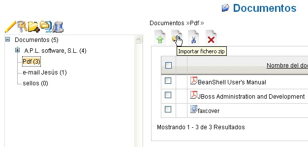
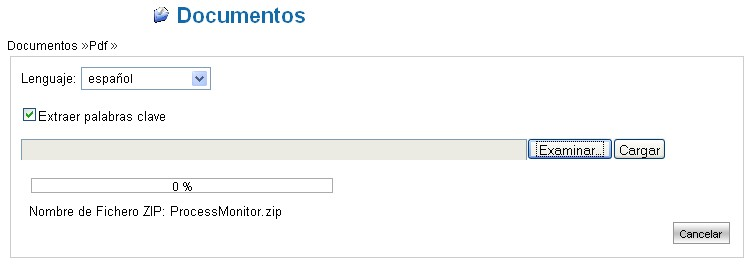

Importar Documentos desde archivos .ZIP |
En algunos casos, puede ser útil el insertar
dentro del sistema de una sola pasada, un número determinado
de documentos que mantienen una organización
específica en carpetas.
En LogicalDOC esta funcionalidad está disponible en la forma
de importaciones de ficheros de archivo .ZIP.
Gracias a esta función es posible replicar sobre el sistema
la exacta estructura de la carpeta "zip", ya sea mediante el nombre y
el anidamiento de la carpeta o ya sea con el nombre y la
posición de los documentos dentro de ese contenedor.
Conviene tener presente que hay algunas limitaciones, la pricipal de
las cuales es que el fichero .ZIP no puede ser excesivamente grande.
Es aconsejable no exceder la dimensión de 20 MB (megabytes).
Primero, el usuario debe de crear la carpeta con los documentos sobre
el propio PC.
Sucesivamente, el usuario debe de producir un archivo .ZIP de la
carpeta, utilizando un instrumento como WinZip, 7-Zip o similar.
Introduce el fichero así creado en LogicalDOC.
Carga del fichero .ZIP
- En el área Documentos seleccionar la
carpeta "padre" que almacenará los documentos contenidos en
el archivo.
La carpeta seleccionada se verá resaltada en negrita.

- Haciendo click sobre el icono "Importar archivo zip" aparecerá una máscara para cargar ficheros, similar a la usada para la inserción de un documento nuevo.
- Pulsar el botón "Hojear" y seleccionar en el disco físico local un fichero del tipo archivo .ZIP.
- Pulsar el botón "Cargar" para transferir
el ficheror sobre LogicalDOC.
La barra indicadora mostrará el progreso de la operación de Carga (trasferencia de fichero).
Al terminar, cuando la barra haya alcanzado el 100%, aparecerá el botón "Importar archivo zip" a la derecha del formulario de inserción. - Pulsar el botón "Importar archivo zip"
para iniciar la importación.

El indicador de estado
Al cabo de un rato (que puede ser algunos minutos) aparece la carpeta "padre" con su nuevo contenido.
Una vez realizada la operación, el usuario debe de completar la importación. Ya que puede ser de larga duración, la sesión se puede interrumpir, en cuyo caso no se preocupe, el sistema procederá con la importación, será solamente necesario volver a realizar login una segunda vez.
LogicalDOC adoptará la esctructura de la carpeta "zip" y copiará todos los documentos en el archivo.
La nueva carpeta y sus documentos heredarán todos los permisos de la carpeta en la cual son importados.